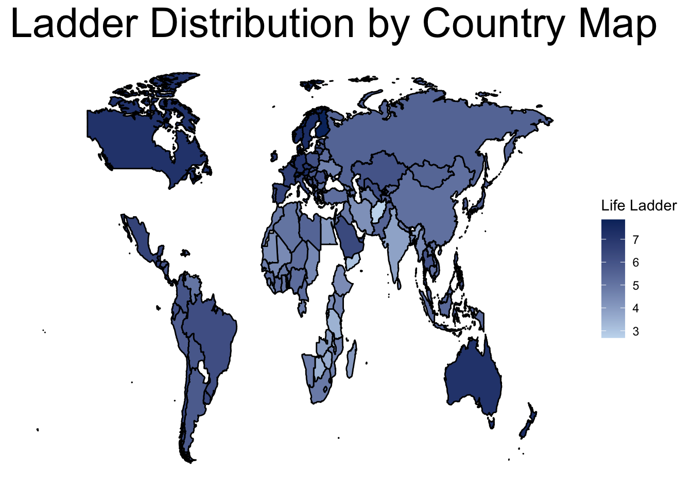
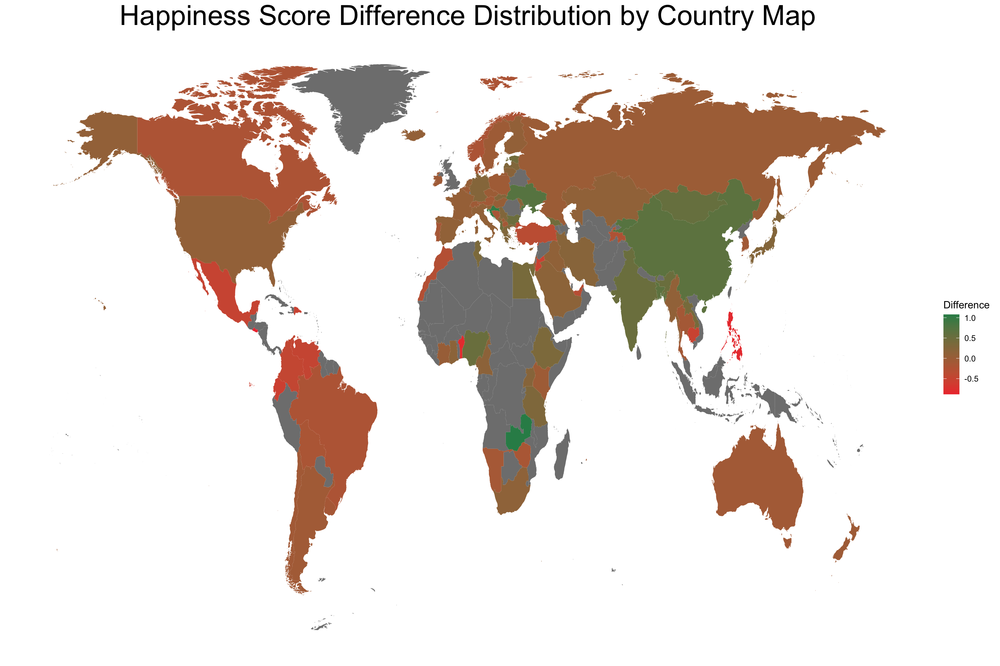

Chapter 5 Results
5.2 General Life Ladder Distribution
For this part, we are also using baseline data from 2018. ### Distribution by Country  ### Distribution by Region
5.2.1 Distribution across Time
To be discussed in Chapter 6, the Interactive Component.
5.3 COVID-19 Impact on Life Ladder
5.3.1 Comparison between Time (Pre and Post Pandemic)
We decide to use data averaged from 2017 to 2019 to represent the general life Life Ladder before the COVID-19 pandemic, and compare it to the 2020 Life Ladder. The difference between Life Ladder is the following:
 The Cleveland plot here is capturing the score difference between the average score from 2017 to 2019 and the score from the single year of 2020. We plot every country and its score difference, and we reorder it from the highest difference, i.e., Life Ladder in 2020 is higher than that of previous years, to the lowest. And Zambia has the surprisingly highest score difference, followed by Croatia, Kyrgyzstan, and Ukraine. The score difference in Zambia is about 1.07, which means that people in Zambia feel much better during 2020 than before. However, when check back the original dataset, we found that Zambia has a very low average Life Ladder at 3.76 before the pandemic, and it increased to 4.838 in 2020. Also, according to the research Mental health and wellbeing implications of the COVID-19 quarantine for disabled and disadvantaged children and young people: evidence from a cross-cultural study in Zambia and Sierra Leone, it shows that people in Zambia and other countries in Africa still have low levels of life satisfaction.
The Cleveland plot here is capturing the score difference between the average score from 2017 to 2019 and the score from the single year of 2020. We plot every country and its score difference, and we reorder it from the highest difference, i.e., Life Ladder in 2020 is higher than that of previous years, to the lowest. And Zambia has the surprisingly highest score difference, followed by Croatia, Kyrgyzstan, and Ukraine. The score difference in Zambia is about 1.07, which means that people in Zambia feel much better during 2020 than before. However, when check back the original dataset, we found that Zambia has a very low average Life Ladder at 3.76 before the pandemic, and it increased to 4.838 in 2020. Also, according to the research Mental health and wellbeing implications of the COVID-19 quarantine for disabled and disadvantaged children and young people: evidence from a cross-cultural study in Zambia and Sierra Leone, it shows that people in Zambia and other countries in Africa still have low levels of life satisfaction.
Meanwhile, El Salvador has the lowest score difference, with -0.883, followed by Philippine, Benin, and Malta. A negative score difference means that people in those countries would generally think life during 2020 is much worse than the years before the pandemic. And it could represent a sense of severe social chaos and an acute public health situation. Also, when we check back the original dataset, El Salvador has 6.345 pre-pandemic, which is close to Saudi Arabia. This phenomenally low score difference could also be explained as that people lived in a relatively better life before and COVID-19 disturbed the peace at a large scale.
 The above world map of Life Ladder provide a geographic perspective of how this incident has impacted the world. In this map, the green area represents a positive change in the Life Ladder difference, and the red region shows the countries with negative Life Ladder difference. And it is clear that the Asia & Pacific region has the most concentrated positive score change countries. This situation can be deciphered as generally speaking, people in Asia & Pacific region are not detrimentally bothered by the pandemic. Since this region has successfully suppressed COVID-19, people would feel a sense of safety and cohesion within the society to resist the intrude of the pandemic. South America and some region in North America and Europe have some kind of substantial decrease in Life Ladder before pandemic and post pandemic. This situation can be understood as a disbelief from people to the society or even the government, and they just don’t feel safe and receive enough public health support during the pandemic. Or, they might have experienced a big drawdown in life quality and mentally feel very uneasy during this special time.
There are also missing values in 2020 Life Ladder when we conduct this project. Every region in the map that is filled in with color gray indicates that there is a missing 2020 Life Ladder in the country. Most of the missing data countries are in Africa, Arctic region, and Antarctic region (excluded from the map). A very direct explanation of the data missing would be very low population and difficulty of gathering survey response.
5.3.2 Comparison between Region
This section is to address the comparison of the Life Ladder across economic regions. The graph is interactive and when you move the mouse to the bar, you will see the exact average Life Ladder for the region from different time.
The above graph compares the Life Ladder before and after the pandemic across 7 difference economic regions divided by geographic alignment: Africa, Arab States, Asia & Pacific, Europe, Middle East, North America, and South/Latin America. The black bar shows the score from pre-covid era, and the blue one shows the post pandemic time. Overall, North America has the highest average Life Ladders, which is around 7, both before and after the pandemic, while Africa got the lowest, which is around 4.5. This is easily understood, since North America is one of the most developed regions and it has the highest levels of social and public health support, while Africa is the opposite. Some regions in the Africa are still experiencing turmoil and chaos recently, and the public health support remains in an undeveloped level.
In addition, the Life Ladder does increase after pandemic compared to pre-pandemic in five regions: Africa, Arab States, Asia & Pacific, Europe, and Middle East, while the scores drop in North America and South/Latin America. Also, the Life Ladder increases the most in Africa, an increase by 0.3, and it decreases the most in South/Latin America, which is around 0.35.
5.3.3 Comparison between Development Level
This section is to address the comparison of the Life Ladder across country development levels – Developed, Developing, and The Third World countries. The graph is interactive and when you move the mouse to the bar, you will see the exact average Life Ladder for the different development levels from different time.
The above bar plot compares the Life Ladder across three different development levels, Developed, Developing, and The Third World, and across the time, before and after the pandemic. The black bar shows the score from pre-covid era, and the blue one shows the post pandemic time. It is clear and easily understood that the developed countries have the highest Life Ladders across the time, both pre and post pandemic. However, the developing countries and the third world countries got nearly the same level of Life Ladders, difference less than 0.2. One possible way to explain this fact is that both people in developing countries and the third world countries are experiencing some kind of living pressure, from different aspect like peer pressure and competition or hunger, war, and safety.
Besides, the Life Ladders in all the three development levels decrease in some level.
5.4 Life Ladder Rank Analysis
This Alluvium graph shows the change in Life Ladder rankings from 2015 to 2020.
 To achieve this feature, we manually ranked all countries in each year, and select the top 50 countries to show the change in rankings. And the color coding discriminates the different economic regions. Based on the graph, we would see that the top countries with the highest Life Ladders remains relatively stable, they would go back and forth within the nearby rankings but will hardly go very up or down. However, the countries in the lower rankings have a higher volatility, they well suddenly go up or down, on a large scale.
To achieve this feature, we manually ranked all countries in each year, and select the top 50 countries to show the change in rankings. And the color coding discriminates the different economic regions. Based on the graph, we would see that the top countries with the highest Life Ladders remains relatively stable, they would go back and forth within the nearby rankings but will hardly go very up or down. However, the countries in the lower rankings have a higher volatility, they well suddenly go up or down, on a large scale.
In addition, we see that:
- European countries always have the highest Life Ladders, like Finland and Norway.
- United States and Canada in North America are always among the highest, and they are the only two North America countries that are in top 50.
- South/Latin America has the second largest number of top 50 countries.
- Asia & Pacific, Middle East, Arab States, and Africa have very small number of countries that are of the top 50 highest Life Ladder countries.